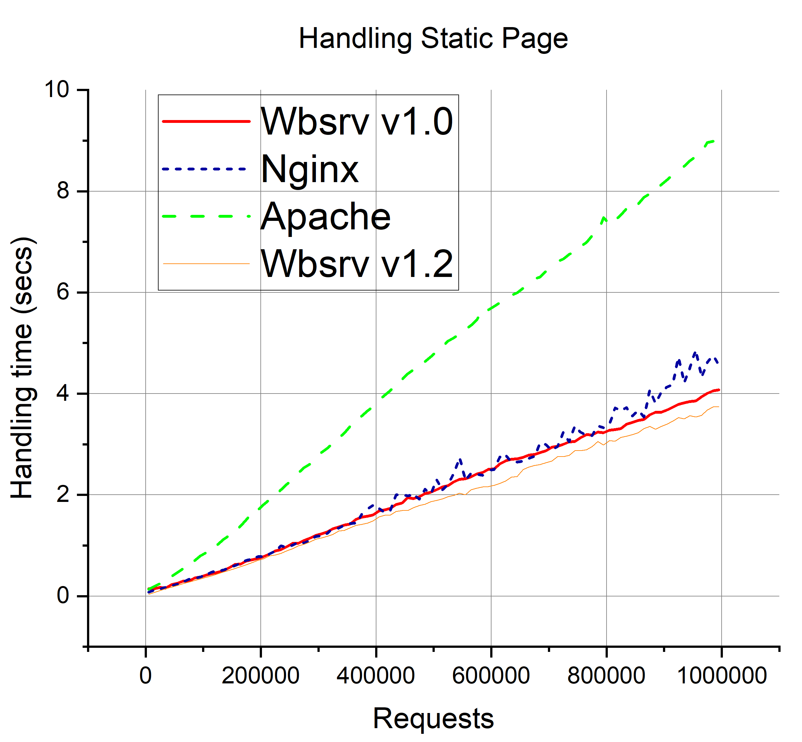
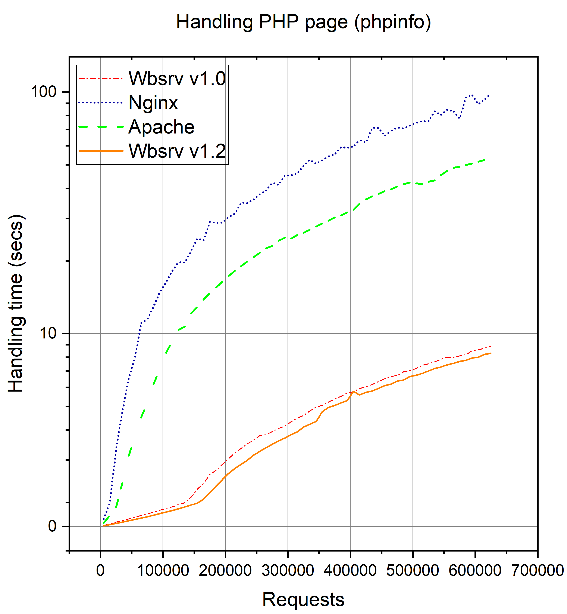

About the Project
wbsrv is a minimal, fast, and embeddable web server written in C++. It's designed for high-performance, multi-threaded web serving.
Build guide is available in the repository README: Steps to build
Key Advantages
- Written in modern C++ with performance and safety in mind
- Supports multi-threading and high-concurrency
- Lightweight and easy to install
- Supports PHP execution
- Built-in caching system for pages
Current Status
The project is under active development. Core HTTP handling and threading mechanisms are implemented. PHP embedding works, however is in progress and needs improvements. Planned future features include:
- Better configuration system and flexibility
- HTTP/3 support
- Logging & monitoring tools
- Extensions API for C++
Graph Visualization
Below are graphs and metrics related to the performance.

